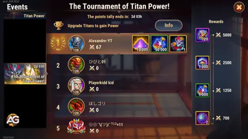

O Torneio de Poder dos Titãs é um dos eventos mais empolgantes e competitivos em Hero Wars Alliance. Seja você um jogador experiente ou iniciante, dominar este evento pode lhe proporcionar uma vantagem significativa no jogo.
Com a chance de ganhar recompensas exclusivas como Pedras de Pele de Titã, recursos raros e avatares poderosos, as apostas são altas, mas as oportunidades também são.
Neste guia, exploraremos estratégias essenciais para ajudá-lo a dominar a competição e maximizar suas recompensas.

Estratégias e recompensas do Torneio de Poder dos Titãs em Hero Wars Alliance, um jogo desenvolvido pela Nexters.
O que é o Torneio de Poder dos Titãs?
O Torneio de Poder dos Titãs é um evento de três dias que coloca os jogadores uns contra os outros em uma corrida para fortalecer seus Titãs.
Os pontos são acumulados com base nos aumentos de poder das equipes de Titãs, por meio de melhorias como evolução de artefatos, níveis de estrelas e skins.
O jogador com mais pontos ao final do evento alcança o topo e recebe recompensas valiosas.
O grande prêmio para o vencedor inclui um Avatar exclusivo, 10.000 Pó de Fada e 50.000 Poções de Titã, tornando este evento altamente cobiçado.
Seja competindo pela glória ou apenas buscando melhorar sua equipe de Titãs, entender as mecânicas e desenvolver uma estratégia vencedora é essencial.
Estratégias Principais para Vencer o Torneio de Poder dos Titãs
Sincronizando Suas Melhorias
O timing desempenha um papel crucial neste torneio. Embora possa ser tentador gastar seus recursos no primeiro dia para ganhar vantagem, essa abordagem pode ser prejudicial.
Em vez disso, guarde suas melhorias para as últimas horas do evento. Eis o porquê:
Avalie a Competição: Observando o progresso dos seus concorrentes nos dois primeiros dias, você pode calcular quantos pontos serão necessários para superá-los.
Surpreenda os Oponentes: Muitos jogadores gastam seus recursos cedo, deixando poucas chances de ganhar pontos significativos no último dia. Ao segurar suas melhorias, você pode fazer um avanço repentino e garantir uma posição mais alta.
Para resultados ideais, faça login nos minutos finais do evento para realizar suas melhorias e maximizar sua pontuação.
Gestão Eficiente de Recursos
O sucesso no Torneio de Poder dos Titãs exige um planejamento cuidadoso de recursos. Veja como se preparar com antecedência:
Acumule Recursos: Economize Poções de Titã, componentes de artefatos, Pedras de Pele de Titã e ouro ao longo do mês que antecede o evento.
Priorize a Alocação de Recursos: Foque em melhorias que oferecem mais pontos. Por exemplo:
Aumente os níveis de artefatos e estrelas dos Titãs, pois eles oferecem aumentos significativos de poder.
Evite melhorias que consomem muito ouro no início, a menos que você tenha um excedente. Priorize Poções de Titã e Níveis de Estrelas de Artefatos que não exigem ouro.
Metas Diárias de Pontos: Almeje atingir o limite diário de 5.000 pontos para desbloquear todas as recompensas de estágio. Essas recompensas frequentemente incluem esferas de invocação, pedras de pele e Poções de Titã, que impulsionarão ainda mais seu progresso.
Dicas para Iniciantes
Se você é um jogador iniciante, tem vantagens únicas que podem ajudá-lo a ter sucesso neste torneio. Aqui está o que você precisa saber:
Aproveite o Potencial de Crescimento: Nos estágios iniciais do jogo, melhorar seus Titãs gera aumentos de pontos maiores em comparação a jogadores avançados que precisam de muito mais recursos para ganhos incrementais.
Foque nos Titãs Principais: Concentre-se em melhorar sua equipe principal de Titãs em vez de distribuir recursos entre vários Titãs. Isso garante que seus investimentos ofereçam resultados máximos.
Desbloqueie Titãs Rapidamente: Use esferas de invocação e poções para desbloquear mais Titãs e fortalecer sua equipe.
Competindo Contra Jogadores Avançados
Jogadores avançados, muitas vezes chamados de "baleias," podem ter mais recursos, mas enfrentam retornos decrescentes devido às suas equipes já maximizadas. Veja como superá-los:
Maximize a Eficiência de Pontos: Como os "baleias" têm menos melhorias para fazer, eles ganham menos pontos por recurso gasto. Foque em melhorias que proporcionem um aumento de poder maior para cada recurso usado.
Seja Estratégico com o Timing: Mesmo que jogadores avançados tenham vantagem em recursos, sua capacidade de cronometrar melhorias de forma eficaz pode lhe dar a vantagem em uma competição acirrada.
Entendendo as Mecânicas do Torneio
Inscrição e Agrupamento
Os jogadores são agrupados com base no nível de equipe e na atividade recente. Uma vez que o torneio começa, o grupo é fixado e nenhum novo participante pode entrar.
Isso garante uma competição justa, já que os jogadores enfrentam adversários de força semelhante.
Cálculo de Pontos
Os pontos do torneio são concedidos com base no aumento de poder dos seus Titãs. Eis o que contribui para sua pontuação:
Melhorar os Níveis dos Titãs: Cada nível adicional proporciona um pequeno aumento de poder.
Melhorias de Artefatos: Aprimorar artefatos dos Titãs pode gerar aumentos significativos de poder.
Níveis de Estrelas e Skins: Melhorar níveis de estrelas e skins não apenas melhora o desempenho, mas também adiciona pontos substanciais à sua pontuação.
Cada ponto de poder equivale a um ponto no torneio, então priorize melhorias que ofereçam os maiores retornos.
Sistema de Recompensas e Como Maximizá-lo
Recompensas Diárias
O evento inclui recompensas diárias por estágio, que são redefinidas às 5:00 da manhã no fuso horário do seu jogo. Essas recompensas incluem esferas de invocação, pedras de pele e Poções de Titã. Para maximizar seus ganhos:
Certifique-se de resgatar todas as recompensas antes da redefinição diária.
Foque em melhorias que o ajudem a atingir a meta de 5.000 pontos por dia.
Recompensas Finais
A recompensa para o primeiro lugar é altamente cobiçada e inclui:
Avatar Exclusivo: Um símbolo da sua vitória.
50.000 Poções de Titã: Escolha melhorias que beneficiem mais sua equipe de Titãs.
10.000 Pó de Fada: Essencial para melhorar os artefatos dos Titãs.
Mesmo que você não vença, o progresso feito durante o torneio fortalecerá significativamente seus Titãs para batalhas futuras.
Reflexões Finais sobre o Torneio de Poder dos Titãs
O Torneio de Poder dos Titãs é um teste de estratégia, timing e gestão de recursos. Ao acumular recursos, fazer melhorias com sabedoria e cronometrar seus esforços para obter o máximo impacto, você pode subir no placar e garantir recompensas valiosas. Seja você um iniciante buscando fortalecer sua equipe ou um jogador avançado almejando o topo, essas dicas lhe darão a vantagem necessária.
Perguntas Frequentes (FAQs)
Como ganho pontos no Torneio de Poder dos Titãs?
Os pontos são ganhos ao aumentar o poder dos seus Titãs por meio de melhorias como níveis, artefatos, skins e níveis de estrelas.
Quais recursos devo economizar para o torneio?
Economize Poções de Titã, componentes de artefatos, Pedras de Pele de Titã e ouro. Foque em melhorias que proporcionem os maiores aumentos de poder.
É melhor melhorar cedo ou esperar até o final?
É melhor esperar até as últimas horas do torneio para realizar suas melhorias. Isso permite avaliar a competição e maximizar sua pontuação de forma eficiente.
Qual é o benefício das recompensas diárias?
As recompensas diárias incluem itens valiosos como esferas de invocação e Poções de Titã. Atingir a meta diária de 5.000 pontos garante que você colete todas as recompensas disponíveis.
Jogadores iniciantes podem competir com jogadores avançados?
Sim, jogadores iniciantes têm vantagem porque suas melhorias geram aumentos maiores de pontos. Foque nos Titãs principais e priorize melhorias.
O que acontece se eu esquecer de resgatar as recompensas diárias?
Se você não resgatar suas recompensas diárias antes da redefinição, elas serão perdidas. Faça disso um hábito diário para coletá-las.
Você gostou do nosso Guia Estratégico para o Torneio Poder dos Titãs em Hero Wars Alliance? Há algo que não entendeu ou gostaria de sugerir mudanças? Convidamos você a se juntar à nossa sessão de comentários na página do Alexandre Games Blog. Não hesite em expressar sua opinião, clarificar suas dúvidas e compartilhar sua sugestões. Clique no botão abaixo para começar:
 Super Titã Solaris Hero Wars Mobile
Super Titã Solaris Hero Wars Mobile Super Titã Tenebris Hero Wars
Super Titã Tenebris Hero Wars Super Titã Hiperião Hero Wars Mobile
Super Titã Hiperião Hero Wars Mobile